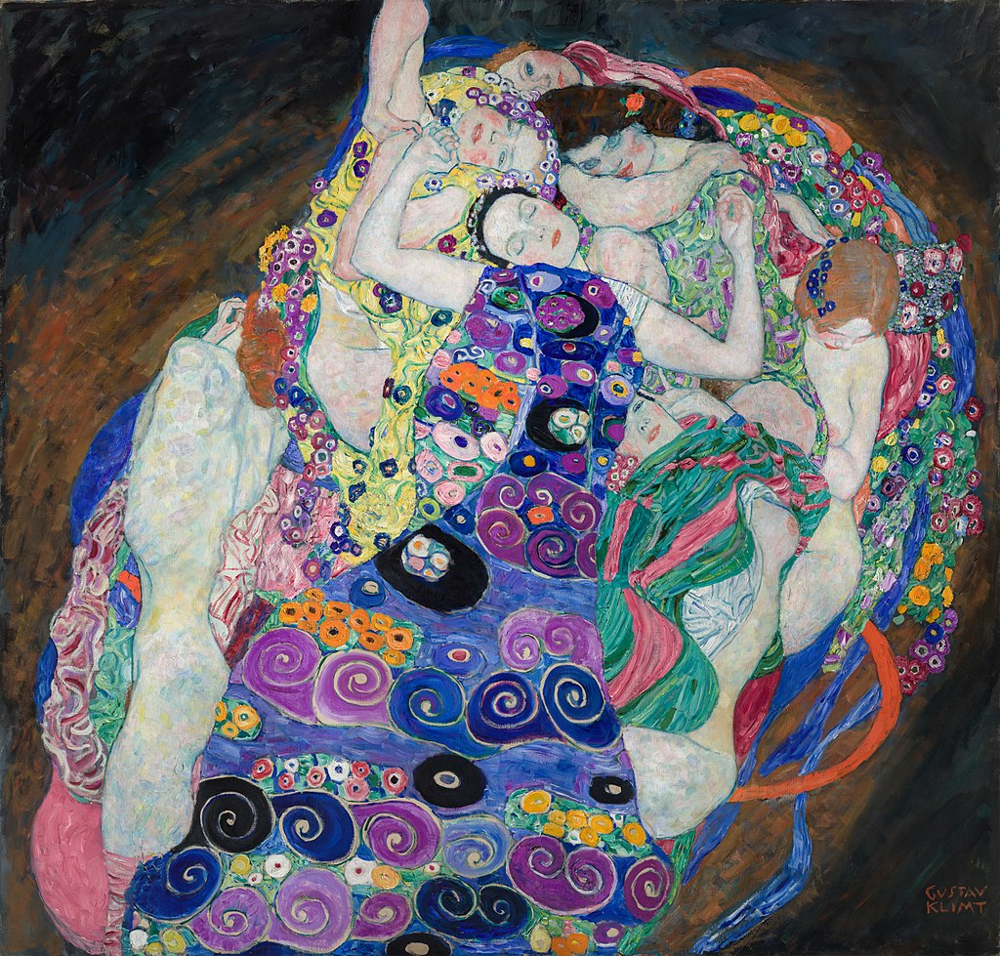

<head>
<meta charset="UTF-8" />
<meta name="keywords" content="drawing, painting" />
<meta name="description" content="drawings by Sunjy" />
<title>Sunjy</title>
<link rel="shortcut icon" type="image/x-icon" href="../../mImages/mCommon/favicon.ico" media="screen" />
<link rel="stylesheet" type="text/css" href="../../mCsses/mCommon/mCssA.css" />
<link rel="stylesheet" type="text/css" href="../../mCsses/mCommon/mCssB.css" />
<link rel="stylesheet" type="text/css" href="../../mCsses/mCommon/mCssC.css" />
<link rel="stylesheet" type="text/css" href="../../mCsses/mCommon/mCssD.css" />
<link rel="stylesheet" type="text/css" href="../../mCsses/mContent/mCssA.css" />
<link rel="stylesheet" type="text/css" href="../../mCsses/mContent/mCssB.css" />
<link rel="stylesheet" type="text/css" href="../../mCsses/mContent/mCssC.css" />
<link rel="stylesheet" type="text/css" href="../../mCsses/mContent/mCssD.css" />
</head>
<script type="text/javascript" src="../../mScripts/mContent/mContentAA.js" /></script>
<script type="text/javascript" src="../../mScripts/mContent/mContentAB.js" /></script>
<script type="text/javascript" src="../../mScripts/mContent/mContentAC.js" /></script>
<script type="text/javascript" src="../../mScripts/mContent/mContentAD.js" /></script>
<script type="text/javascript"></script> 
<script type="text/javascript">
document.write('<div class="mImgAbsolute"></div>');
/*
document.write('<p class="mFontSizeBColor" />From a white paper...</p>');
document.write('<table class="center"><tr><td>');
document.write('');
document.write('</td></tr></table>');
*/
</script>


<script type="text/javascript">
document.write('<p class="mFontSizeBColor" />The Maiden</p>');
document.write('<p class="mFontSizeSColor" />“The Maiden” by Gustav Klimt depicts the dreamy sensuality of a young girl in a dream state.<br><br>The central sleeping girl is fantasizing about future possibilities for her self in a dream represented by the patchwork quilt of women surrounding her.<br><br>Klimt has created a cloud-like shaped constellation of women with colorful patterned scarves and gowns sprinkled with flower garlands.<br><br>The Maiden’s long dress is covered with spirals symbolizing fertility and the ever-changing and evolving universe. Klimt’s eclectic influences included Classical Greek, Byzantine mosaics, and Medieval styles.<br><br>Klimt emerged from an impoverished childhood to become an artist who significantly influenced the Viennese Secession and Art Nouveau movement.<br><br>His elaborate, explicitly sensual art encompassed themes of regeneration, love, and death.<br><br>Inspired by the emotionally expressive works of  Matisse and Toulouse-Lautrec, Klimt opted for intricate patterns in multicolor that infused the work with movement and fluidity.<br><br>For Klimt, the female form representing the essential purity of human urges, often suppressed by the conservative cultures of his time.<br><br>He aimed to inscribe on human forms their destiny as naturally changing exotic beings. Klimt is regarded as setting free the female spirit and was a renowned critic of his time and its outdated cultural morals.<br><br>“The Maiden” was one of Klimt’s last paintings completed before he died in 1918. He left behind an unfinished painting with the title of “The Bride.”<br><br>It t was planned as a companion piece to this painting. In “The Bride,” the maiden awakes from her dream to become a bride.<br><br>Gustav Klimt<br><br>Gustav Klimt (1862-1918) was a symbolist painter and one of the most prominent members of the Vienna Secession movement.<br><br>Klimt’s primary subject was the female body, and eroticism marks his works.<br><br>Klimt was influenced by Japanese art and its methods and achieved success with the paintings of his “golden phase,” many of which include gold leaf. “The Kiss” is Klimt’s most famous painting.<br><br>Klimt died in 1918, having suffered a stroke and pneumonia due to the worldwide influenza epidemic of that year.<br><br>Numerous paintings by him were left unfinished, including the companion piece to this painting.<br></p>');
document.write('<table class="center" /><tr><td>');
document.write('<br>The central sleeping girl is fantasizing about future possibilities for her self in a dream represented by the patchwork quilt of women surrounding her.<br><br>Klimt has created a cloud-like shaped constellation of women with colorful patterned scarves and gowns sprinkled with flower garlands.<br><br>The Maiden’s long dress is covered with spirals symbolizing fertility and the ever-changing and evolving universe. Klimt’s eclectic influences included Classical Greek, Byzantine mosaics, and Medieval styles.<br><br>Klimt emerged from an impoverished childhood to become an artist who significantly influenced the Viennese Secession and Art Nouveau movement.<br><br>His elaborate, explicitly sensual art encompassed themes of regeneration, love, and death.<br><br>Inspired by the emotionally expressive works of  Matisse and Toulouse-Lautrec, Klimt opted for intricate patterns in multicolor that infused the work with movement and fluidity.<br><br>For Klimt, the female form representing the essential purity of human urges, often suppressed by the conservative cultures of his time.<br><br>He aimed to inscribe on human forms their destiny as naturally changing exotic beings. Klimt is regarded as setting free the female spirit and was a renowned critic of his time and its outdated cultural morals.<br><br>“The Maiden” was one of Klimt’s last paintings completed before he died in 1918. He left behind an unfinished painting with the title of “The Bride.”<br><br>It t was planned as a companion piece to this painting. In “The Bride,” the maiden awakes from her dream to become a bride.<br><br>Gustav Klimt<br><br>Gustav Klimt (1862-1918) was a symbolist painter and one of the most prominent members of the Vienna Secession movement.<br><br>Klimt’s primary subject was the female body, and eroticism marks his works.<br><br>Klimt was influenced by Japanese art and its methods and achieved success with the paintings of his “golden phase,” many of which include gold leaf. “The Kiss” is Klimt’s most famous painting.<br><br>Klimt died in 1918, having suffered a stroke and pneumonia due to the worldwide influenza epidemic of that year.<br><br>Numerous paintings by him were left unfinished, including the companion piece to this painting.<br>" />');
document.write('</td></tr></table>');
</script>


